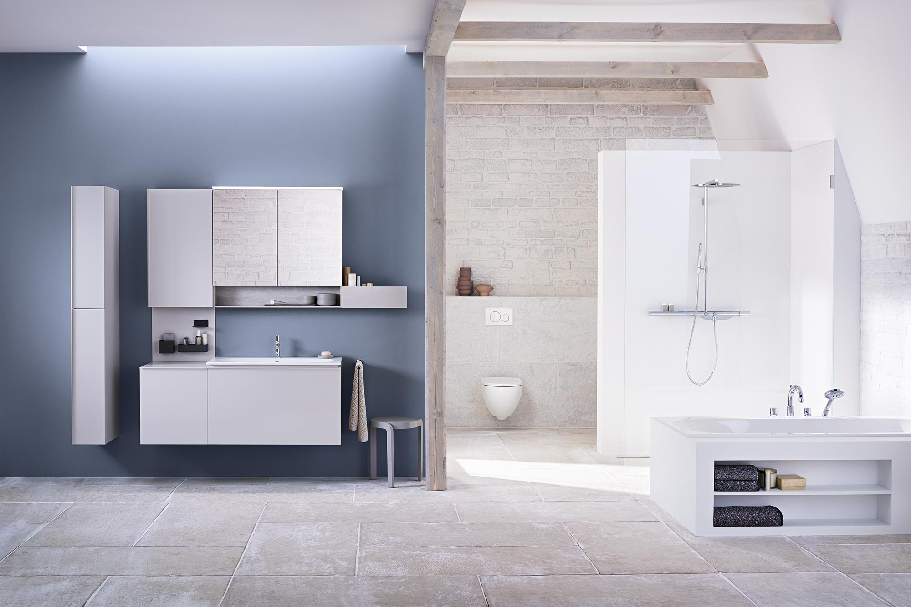

Verstehen, was wirklich gebraucht wird.
Statt langer Textbloecke fuehrt die Seite mit klaren Fragen, Nutzenpunkten und Kontaktwegen.
Von der ersten Idee bis zur fertigen Uebergabe entsteht eine Badseite, die Beratung, Stil, Budget und Umsetzung deutlich besser fuehrt.

Die neue Struktur kombiniert moderne Gestaltung mit SEO-Sicherheit: ein eindeutiger H1, klare Nutzenargumente, logische interne Links, CTA-Bloecke und ein sauberer Canonical auf die bestehende URL.
Statt langer Textbloecke fuehrt die Seite mit klaren Fragen, Nutzenpunkten und Kontaktwegen.
Jede Leistungsseite bekommt eine logische Informationsfolge und passende interne Verlinkung.
Platz fuer echte Referenzen, Teamfotos, Partner, Zertifikate und regionale Nachweise ist vorgesehen.